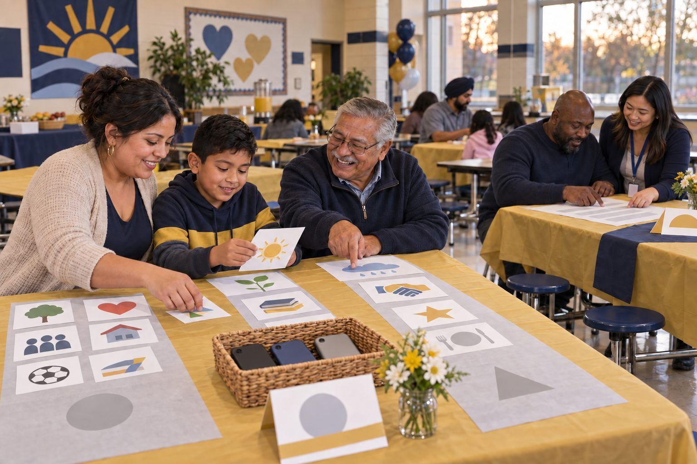

Professional learning · Teachers, Librarians, Leaders, Staff · 40 minutes
Screens at School, Screens at Home: A Family Conversation
Families sort everyday screen moments by purpose, learn in plain language what the Texas phone law does and doesn't cover, and start a family media agreement that fits their own home.
Families hear two messages about screens: "phones are banned at school now" and "kids use screens all day at school." Both are partly true, and the difference matters. In this ready-to-run session, facilitators sit with families as they sort everyday screen moments from school and home by purpose, hear what Texas HB 1481 (2025) does and doesn't cover, learn how the American Academy of Pediatrics' 2026 policy statement shifts the advice toward quality, context, and conversation, and start a family media agreement to finish at home. It stands alone or runs as one station inside a family night planned with the Designing a Family AI & Digital Citizenship Night activity. There is no "right" family here: the goal is conversation, not judgment.
In this packet
- Handout A: Screen-Moment Cards (cut-apart cards)
- Handout B: What the Law Says, What Doctors Say, What We Decide (reading)
- Handout C: Our Family Media Agreement Starter (worksheet)
- Facilitator key (last page)
TCEA ELE indicators
- L5.1 I know how to build strong digital partnerships with families and community organizations.
- L5.3 I am aware of strategies to leverage online community resources to support student learning.
- L4.1 I know how to create a positive and inclusive digital learning climate.
- T2.2 I know how to guide students in safe and responsible internet use.
Full facilitator guide: mglearn.github.io/eles/activities/screens-at-school-screens-at-home.html
Handout A for Screens at School, Screens at Home: A Family Conversation
Screen-Moment Cards
Cut apart. Read each card aloud, including the picture description. The backs are facilitator notes: print them on a separate sheet and use them to ask questions, not to give answers.
Sheet 1 of 2
Card 1 · At home
A video call with Grandma to show her a drawing. Picture: a grandmother and a 6-year-old on a video call. The child holds a drawing up to the camera.
Card 2 · At school
Making a short video that explains how a seed grows. Picture: two 4th graders with a tablet, moving clay figures to make a stop-motion video.
Card 3 · At home
Scrolling short videos in bed after lights out. Picture: a teenager in bed in the dark, face lit by a phone. The clock says 11:40.
Card 4 · At school
A math practice game that shows right away if an answer is right. Picture: a 2nd grader wearing headphones, playing a math game. Stars pop up after each answer.
Card 5 · At home
Looking up "Why do cats purr?" together. Picture: a parent and a 10-year-old side by side at a laptop, both laughing.
Card 6 · At school
Watching a video after the work is done. Picture: students watching a video on a big classroom screen at the end of the day.
Card 7 · At home
Family movie night. Picture: a family on a couch with a bowl of popcorn, watching a movie.
Card 8 · At home
Making music or writing stories on a phone. Picture: a 13-year-old with headphones, making a beat in a music app on a phone.
Handout A for Screens at School, Screens at Home: A Family Conversation
Screen-Moment Cards
Cut apart. Read each card aloud, including the picture description. The backs are facilitator notes: print them on a separate sheet and use them to ask questions, not to give answers.
Sheet 2 of 2
Card 9 · At school
Checking who wrote a news story before using it in an essay. Picture: a high school student at a laptop with three tabs open and a notebook beside it.
Card 10 · At home
A tablet at the table so a little one eats calmly. Picture: a toddler in a high chair watching a tablet at dinner while tired parents eat.
Card 11 · At school
A laptop reads the book aloud because of the student's learning plan. Picture: a student wearing headphones while a school laptop reads a chapter aloud and highlights the words.
Card 12 · At home
Planning a study group with friends by text. Picture: a teen texting in a group chat. The screen says: "Study at the library at 4?"
Card 13 · At school
Personal phones stay put away during the school day. Picture: a backpack zipped closed with a phone inside.
Card 14 · At home
Homework on one screen, a game on another, same room. Picture: a 9-year-old doing homework on a school laptop at the kitchen table while an older brother plays a video game nearby.
Handout B for Screens at School, Screens at Home: A Family Conversation
What the Law Says, What Doctors Say, What We Decide
A take-home page for families. Ask for it in Spanish or Vietnamese, or ask for an interpreter.
1Screens are not all the same. Making a video, looking something up, talking to Grandma, and scrolling at midnight are all "screen time," but they are very different. Your family gets to think about purpose, not just hours.
2What the law says. Texas HB 1481, passed in 2025, requires every Texas public school district and open-enrollment charter school to have a policy that stops students from using personal phones, smartwatches, tablets, and similar devices at school during the school day. Schools must allow exceptions for a student's IEP, 504, or similar plan, for a doctor's directive for a medical need, and for safety requirements.
3What the law does not cover. The same law leaves out devices the school gives to students, such as school laptops and tablets. How much and how well students use those devices is decided by your school district. You have every right to ask: What do students do on school devices? Which grades bring them home? How do teachers decide when to use them?
4What doctors say. The American Academy of Pediatrics (AAP), a national group of children's doctors, published a policy statement in 2026 that moves beyond counting minutes. It asks families to think about quality (what kind of screen time), context (when, where, and with whom), and conversation (talking about it together).
5Some apps are built to keep us watching. The AAP's 2026 statement also notes that apps and games designed to keep people engaged can lead to long stretches of use that crowd out sleep and physical activity. That is true for grown-ups too, so it's something to solve together, not a sign that anyone failed.
6What a national survey found. The Common Sense Census (2021), a national survey of young people ages 8–18, found that tweens (ages 8–12) spent about 5 hours 33 minutes a day and teens (13–18) about 8 hours 39 minutes a day on entertainment screen media, not counting screens used for school or homework. The Common Sense Census (2021) also found that making things, like art, music, writing, or videos, was a small part of that time: about 8 minutes a day for tweens and 14 minutes for teens. These are national averages, not a report card on your family.
7What we decide. Every family is different. The AAP recommends that each family make a Family Media Plan with limits that fit its own routines and values. The free AAP Family Media Plan is at HealthyChildren.org (search "AAP Family Media Plan"). Tonight's agreement starter is a first step.
8Three questions to talk about at home: Which screen moments help our family? When and where do we want no screens (meals, car rides, bedrooms at night)? What do we want to make more of, not just watch?
Handout C for Screens at School, Screens at Home: A Family Conversation
Our Family Media Agreement Starter
Write, draw, or both. Any language is welcome. This is a start, not a contract; finish it at home with the free AAP Family Media Plan if you like.
Screens help our family when we… (draw or write: "In our family, screens help us ___.")
Our screen-free times and places: "We keep screens away during ___ and in ___." (ideas: meals, car rides, bedrooms at night, the first hour after school)
At night, our devices sleep here: "Our phones and tablets charge ___."
Something we will MAKE together, not just watch: "This month we will make ___." (a video for a relative, a song, a comic, a recipe card)
What grown-ups will do too: "The grown-ups in our family will ___."
A question we want to ask our school about school laptops or tablets:
We will check in on this agreement on (date) ___. Signed or drawn by everyone in our family:
Facilitator only for Screens at School, Screens at Home: A Family Conversation
Answer key and notes
Handout A: Screen-Moment Cards
- Card 1 · At home
- Usually: Connecting (and a little Making). Ask: "Which screen moments bring your family closer?" Screens that connect us with people we love are worth protecting.
- Card 2 · At school
- Usually: Making. This is what purposeful school screen time can look like: students create and explain. Families can ask their child's teacher, "What do students make on their school devices?"
- Card 3 · At home
- Usually: Just watching or scrolling. No blame: many apps are designed to keep us watching, and the AAP's 2026 policy statement notes this can crowd out sleep. Idea: a family charging spot outside bedrooms, for grown-ups' phones too.
- Card 4 · At school
- Usually: Learning. Practice with quick feedback can help, especially when the teacher looks at the results and adjusts. A good question for school: "What does the teacher do with the results?"
- Card 5 · At home
- Usually: Learning and Connecting. Searching together is the AAP's "conversation" in action. Ask: "How did you decide the answer was true?"
- Card 6 · At school
- Usually: Just watching. Sometimes it's a well-earned break; sometimes it's filler. Families can ask respectfully: "When students finish early, what do they do?"
- Card 7 · At home
- Usually: Just watching, and that's okay. Rest, fun, and time together count. This is the AAP's "context": the same movie is a different experience watched together on a Friday than alone at midnight.
- Card 8 · At home
- Usually: Making. The Common Sense Census (2021) found that creating things like art, music, writing, or video took only about 8 minutes a day for tweens and 14 minutes for teens of their free-time screen use. Making is rare and worth encouraging.
- Card 9 · At school
- Usually: Learning. Checking sources is a life skill families use too. Ask your teen: "How do you decide if something online is true?"
- Card 10 · At home
- Usually: Just watching. Many tired families do this; no shame. Idea to offer, not require: choose one meal a week with no screens for anyone, and talk about the best part of the day.
- Card 11 · At school
- Usually: Learning. For some students, a device is how they access learning, often as part of an IEP or 504 plan. Cutting screen time for everyone could take this away, so plans come first.
- Card 12 · At home
- Usually: Connecting. Texting friends is how many teens plan and belong. Ask: "How do you step away when the group chat gets too much?"
- Card 13 · At school
- This card is about the law. Texas HB 1481 (2025) requires a policy on personal phones and similar devices during the school day. It does not cover laptops or tablets the school provides. Use this card to start the "What the law says" talk.
- Card 14 · At home
- Could be Learning and Just watching (or Connecting, if the game is with friends). Ask: "Does the homework need the screen? Is the game making it hard to focus?" A good agreement topic.